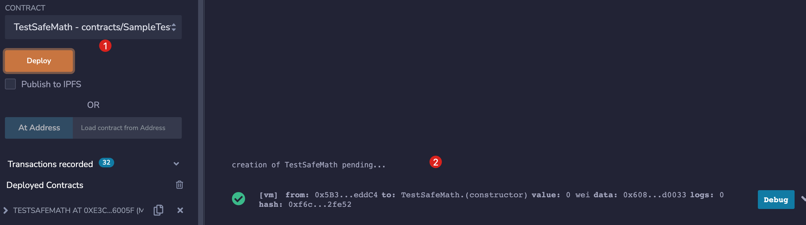
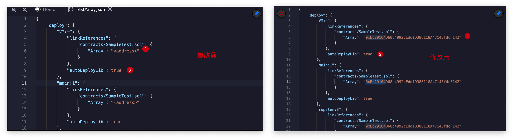

第29节：library
库与合约类似，限制：不能在库中定义状态变量，不能向库地址中转入ether；
库有两种存在形式：
- 内嵌（embedded）：当库中所有的方法都是internal时，此时会将库代码内嵌在调用合约中，不会单独部署库合约；
- 链接（linked）：当库中含有external或public方法时，此时会单独将库合约部署，并在调用合约部署时链接link到库合约。
- 可以复用的代码可以编写到库中，不同的调用者可以linked到相同的库，因此会更加节约gas；
- 对于linked库合约，调用合约使用delegatecall进行调用，所以上下文为调用合约；
- 部署工具（如remix）会帮我们自动部署&链接合约库。
// SPDX-License-Identifier: MIT
pragma solidity ^0.8.13;
// 1. 只有internal方法，会内嵌到调用合约中
library SafeMath {
function add(uint x, uint y) internal pure returns (uint) {
uint z = x + y;
require(z >= x, "uint overflow");
return z;
}
}
library Math {
function sqrt(uint y) internal pure returns (uint z) {
if (y > 3) {
z = y;
uint x = y / 2 + 1;
while (x < z) {
z = x;
x = (y / x + x) / 2;
}
} else if (y != 0) {
z = 1;
}
// else z = 0 (default value)
}
}
contract TestSafeMath {
// 对uint类型增加SafeMath的方法
using SafeMath for uint;
uint public MAX_UINT = 2**256 - 1;
// 用法1：x.方法(y)
function testAdd(uint x, uint y) public pure returns (uint) {
return x.add(y);
}
// 用法2：库.方法(x)
function testSquareRoot(uint x) public pure returns (uint) {
return Math.sqrt(x);
}
}
// 2. 存在public方法时，会单独部署库合约，并且第一个参数是状态变量类型
library Array {
// 修改调用者状态变量的方式，第一个参数是状态变量本身
function remove(uint[] storage arr, uint index) public {
// Move the last element into the place to delete
require(arr.length > 0, "Can't remove from empty array");
arr[index] = arr[arr.length - 1];
arr.pop();
}
}
contract TestArray {
using Array for uint[];
uint[] public arr;
function testArrayRemove() public {
for (uint i = 0; i < 3; i++) {
arr.push(i);
}
arr.remove(1);
assert(arr.length == 2);
assert(arr[0] == 0);
assert(arr[1] == 2);
}
}
remix部署情况：
部署TestSafeMath，会发现仅部署了TestSafeMath合约

部署TestArray，会发现1. 先部署了库合约；2. 再部署了TestArray。

如果我们想重复利用同一个库（Array），可以分别部署库合约Array和TestArray合约：
部署库Array：得到地址：0xEc29164D68c4992cEdd1D386118A47143fdcF142
编译TestArray-> 找到artifacts/TestArray.json（remix会自动编译生成），如果没有，检查remix Setting-> Generate contract metadata开关
将库地址提款成Array地址，将autoDeployLib改为false
部署TestArray合约，此时会去link上面部署的Array库合约地址，而不会重新部署Array合约。

参考link：
- Stack Overflow提问出和我相同的疑问：https://ethereum.stackexchange.com/questions/106574/why-can-i-use-linked-libraries-on-remix-ide-without-deploying-them-first
- 讲解library：https://www.youtube.com/watch?v=25MLAnIzXRw
- 讲解library（画了一个图）：https://www.youtube.com/watch?v=iIMSMfArTiE
- remix部署合约和库详解：https://medium.com/remix-ide/deploying-with-libraries-on-remix-ide-24f5f7423b60